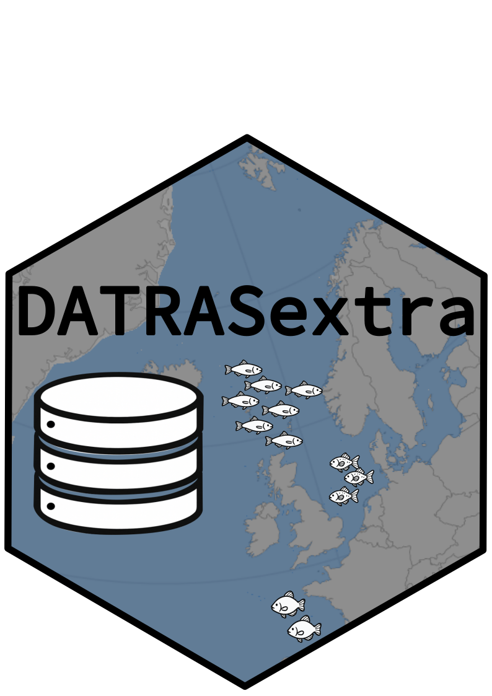

DATRASextra 
Makes working with ICES DATRAS extra easy.
DATRASextra is an R package that simplifies working with the ICES DATRAS database by providing practical functions and detailed documentation.
It builds on DTU Aqua’s DATRAS R package, which provides the core functionality to download and modify DATRAS data — commonly used to prepare abundance indices for ICES stock assessments.
DATRASextra adds tools for: - Estimating spatial distributions and abundance indices across multiple surveys - Calculating catch rates by custom length classes for single species or aggregations - Streamlining the processing and preparation of DATRAS data for analysis
Installation
The current version of the package allows to follow described data processing protocols, estimate swept area indices and plot results.
To get started with DATRASextra, install and load the package:
## Install the package
remotes::install_github("tokami/DATRASextra")
## Load the package into R
library(DATRASextra)Getting help
More detailed examples and documentation for DATRASextra can be found at https://tokami.github.io/DATRASextra/. The pkgdown page includes links to articles, vignettes, functions descriptions, information to version updates, and much more. In case, your question is not answered by the package documentation and on the pkgdown pages, please write an email to the maintainer: Tobias Mildenberger. In case you find bugs, please post an issue on here.
Citation
Please use the R command citation("DATRASextra") to receive information on how to cite this package.
Basic use
DATRASextra makes it easy to download survey data from ICES DATRAS database:
survey <- "SNS"
tmp <- tempdir()
downloadDATRAS(surveys = survey, years = 2023, dir = tmp)This mainly uses the functionality of the DATRAS R package but allows a bit more flexibility, like specifying the path were the data should be installed to.
Next, the data can be read into R with:
surv0 <- readDATRAS(file.path(tmp, survey))Now, you can process, subset, modify and analyse the data: